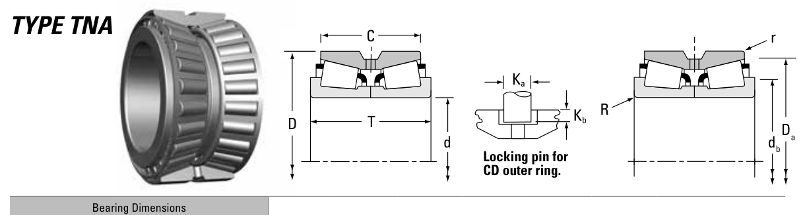

Original catalogue drawing - Timken TRB Catalog, page 650

Scanned from the manufacturer catalogue page listing this part number. All part numbers printed on that table share the same drawing.
Scale cross-section
Blue = inner / outer ring, yellow = rolling element. Drawn to scale from this part's own
dimensions for selection reference only - not a manufacturing or assembly drawing.
Dimension table (mm / inch)
Symbol
Dimension
mm
inch
d
Bore diameter
24.981
0.9835
D
Outside diameter
62
2.4409
T
Overall assembly width
39.688
1.5625
C
Cup / outer-ring width
36.258
1.4275
r
Chamfer (min)
0.8
0.0315
Notes
Tapered roller bearings are cone / cup assemblies; cone and cup weights are listed separately and the total is their sum. Weights are given in kg. Load ratings are shown in both the original catalogue units and the converted value (1 N = 0.2248 lbf). Data is provided for selection reference only - confirm against the latest official catalogue before ordering.
Main dimensions
Bore d (mm)
24.981
Bore d (in)
0.9835
Outside dia. D (mm)
62.000
Outside dia. D (in)
2.4409
Overall width T (mm)
39.688
Overall width T (in)
1.5625
Cup width C (mm)
36.258
Cup width C (in)
1.4275
Load ratings & speeds
Basic dynamic load rating Cr (lbs)
16900
Basic dynamic load rating Cr (N)
75300
Dynamic rating C1 (N, ISO)
75300
Dynamic rating C1 (lbf, ISO)
16900
Radial rating C90 (N)
11200
Radial rating C90 (lbf)
2520
Thrust rating Ca90 (N)
7340
Thrust rating Ca90 (lbf)
1650
Factor e
0.38
Factor Y1
1.77
Factor Y2
2.63
Factor K
1.53
Weight
Weight (kg)
0.62
Mounting dimensions (fillets / shoulders)
Shaft fillet R max (mm)
1.5
Housing fillet r max (mm)
0.8
Shaft shoulder db (mm)
33.0
Housing shoulder Da (mm)
57.0
Bearing life (ISO 281 basic rating life)
C / P
Equivalent load P (N)
L10 (106 rev)
L10h at 500 rpm
4
18,825
102
3,386
6
12,550
392
13,083
8
9,412
1,024
34,133
10
7,530
2,154
71,814
15
5,020
8,323
277,449
Basic rating life per ISO 281: L10 = (C/P)10/3 with C = 75,300 N. Hours = L10 x 106 / (60n). Life-modification factors for lubrication, contamination and temperature (aISO) are not included.
Source & traceability
Brand
Timken
Source catalogue
Timken Tapered Roller Bearing Catalog (2016)
Catalogue page
p.650 (dimensions)
Series type
TNA
ISO dynamic rating C1, Timken C90 / Ca90, static rating C0, geometry factors and assembly weight.
Send us the quantity you need and we will come back with price and
lead time, normally within 24 hours. Equivalent parts from other brands can be quoted at the same time.